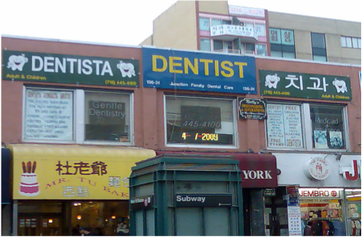
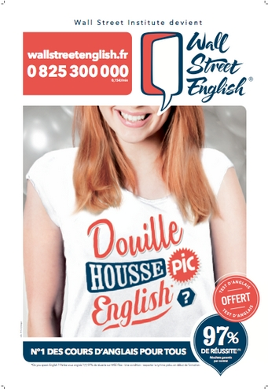
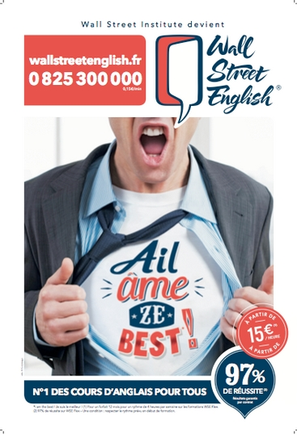

English private tutoring in France
By Noemi Rámila
Index
Context
Introduction
What is Linguistic Landscape?
Parisian English Private Tuition Linguistic Landscape
Context
Go to Index
Children statistics
Year
2002
2006
2014
Primary education
44.9%
59%
79.4%
Secondary education
76.6%
85.7%
97.3%
More information about English in France
Introduction
Go back to Index
What is Linguistic Landscape?
Go to Index
It refers to all visible semiotic signs in public space
Written language
Carved language
Sprayed language
Logos, graphs and other meaningful signs
Linguistic landscape

Linguistic landscape
Linguistic landscape in panel
A book to know more about linguistic landscape :)
Parisian English Linguistic Private Tutoring Landscape
Go back to Index
a bit of advertisement...
Au métro...
Some Wall Street examples
 
But also: On tv!
Dans la télé...
Thank you!!!